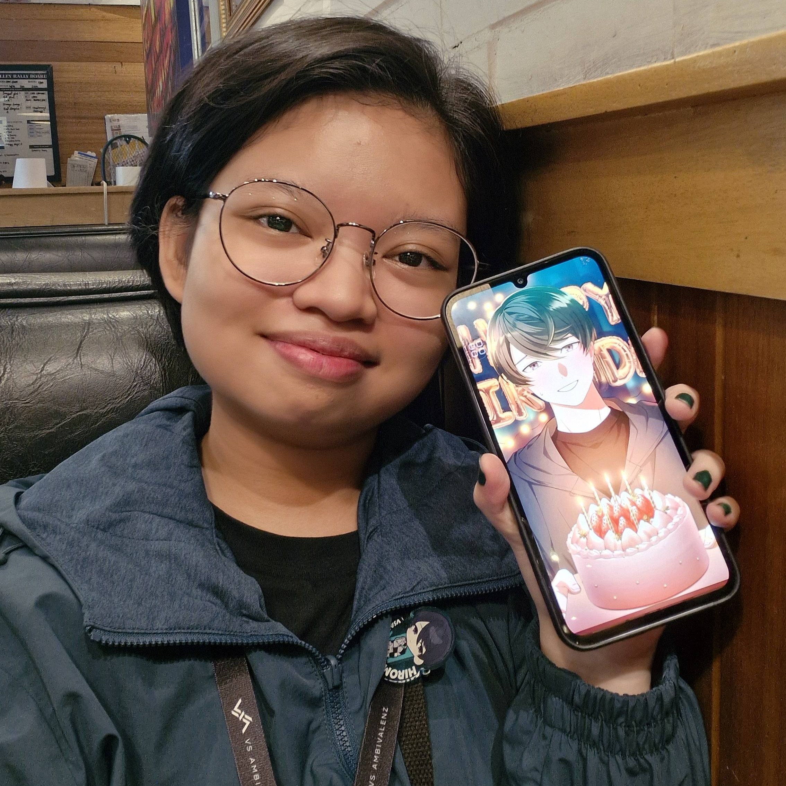
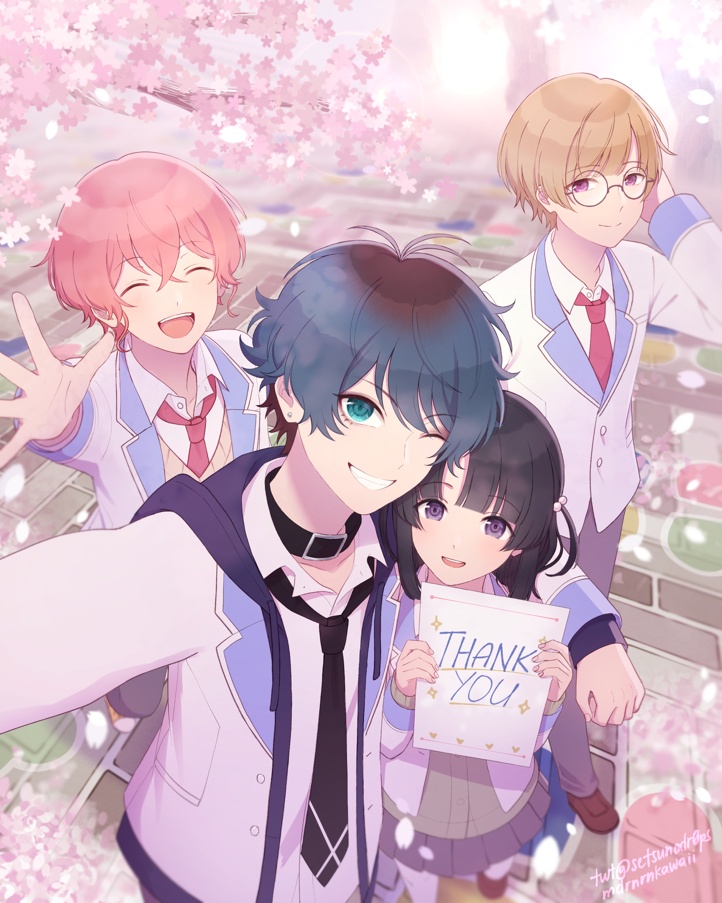
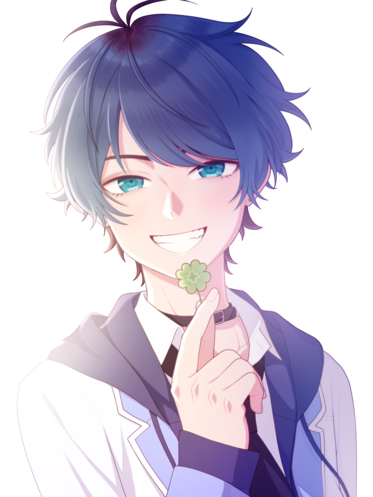
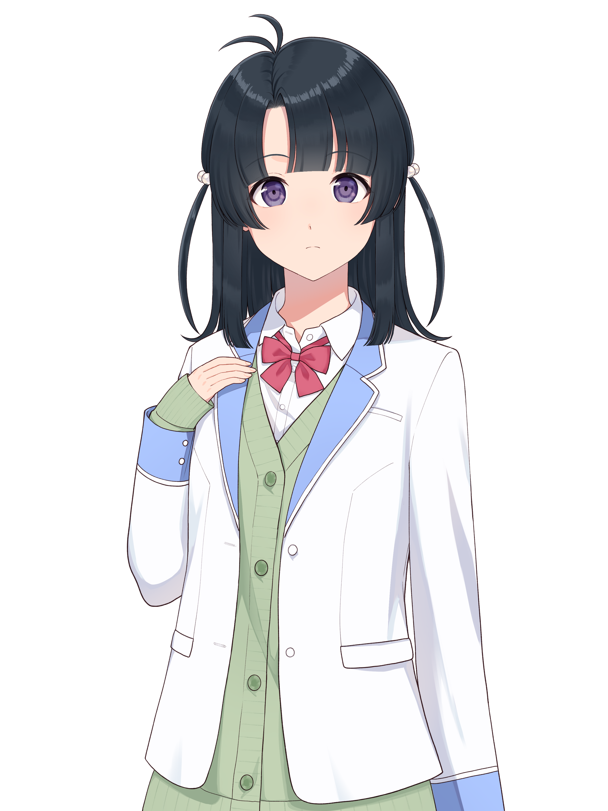

Leiam Iris Lopez
I do my best, and it's thanks to my oshi who motivates me.
I do my best, and it's thanks to my oshi who motivates me.
Welcome to my page! I am Leiam Iris Lopez, and I am currently a sophomore under the Associate in Arts in Digital Design and Art program of the University of the Philippines Open University. I'm more skilled into artworks and illustrations rather than graphic design, but thankfully, multimedia studies courses somehow add onto my knowledge in multimedia, and who knows, they could be helpful for my future career.

I've been drawing since I was 4, and it's thanks to my Arts & Design teacher and my friends' support, I continue to draw and I want to become an illustrator who draws and earns. I really enjoy seeing watercolor styles in artworks and I wish to recreate them digitally too, but I haven't mastered them, especially in the app I use (ibisPaint X).
Ever since 2024, I've been motivated and I longed to become a manga artist in hopes to reach my works to people I could not reach and also people I do not want to face. So watching anime and reading manga gives me a lot of inspiration into creating new stories for me to storytell through writing and drawing.
They are more niche compared to mainstream anime and manga projects, but some of them have really interesting concepts and music. One of them being VS AMBIVALENZ, which is one of my current interests. My oshi Hiromi Fudouura belongs to that franchise.
I guess this is considered like a shoutout to them because I really enjoy listening to the voice characters from media I like and also it makes me discover how talented they are just by using their voice to act out a character. My favorite seiyuus are Gakuto Kajiwara (known for Asta from Black Clover) and Ryohei Kimura (known for Bokuto from Haikyuu).
I really enjoy listening to music especially when I work on my stuff. Lately I've been listening to a mixed playlist full of ARASHI's songs, and it made me discover hidden gems from their B-side songs. Honestly, I don't get why B-side songs tend to be better than the main tracks, in my opinion.

Tricolor Blossoming
The boys from this project were my original characters since 2020, but I decided to revive them for a comic project I had to do for literary arts class in senior high school on 2024. With lots of inspiration, motivation and interest in mind, I plan on making this into a real manga that could possibly also debut well and be sold in bookstores. Currently, I haven't been drawing them in manga style as I am still trying to finalize the story that is strong enough before I could start working on the actual drafts that an editor could approve.
You can read the ones I made back in 2024 here! ( PART 1 | PART 2 )
2024-present

The main protagonist of Tricolor Blossoming. A 15-year-old male. After achieving his dream of finally living in Tokyo, he goes on a new chapter in his life: his high school year...
2024-present

The deuteragonist of Tricolor Blossoming, although not considered as a female lead. A 15-year-old female. She is a schoolmate of Yoru, but not in the same class as him...
2024-present
I want to connect to more people who I share interests or enjoys art with! Let's be friends!
UP Email: llopez1@up.edu.ph
Email: lopez.leiamiris@gmail.com
Discord: hiromifudouura